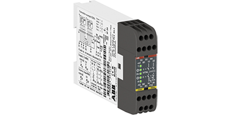
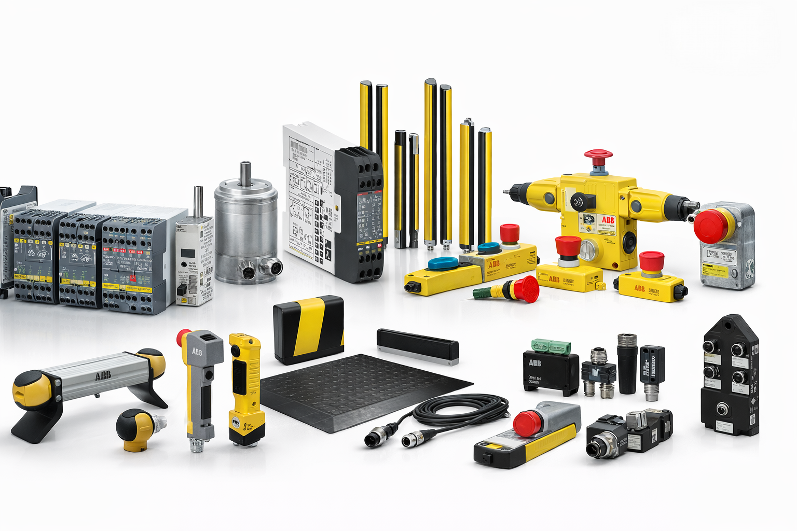
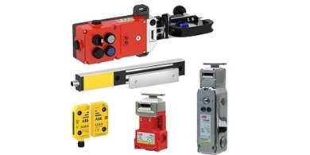
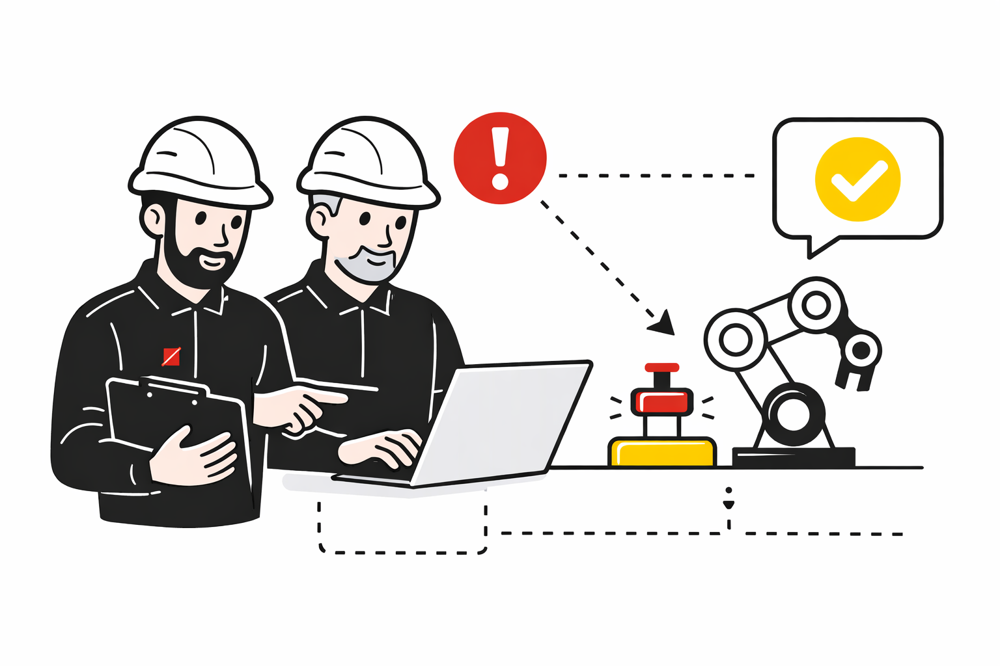
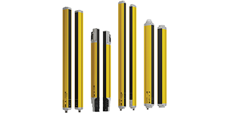
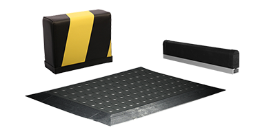

Bezpečnostní kontroléry
Řešení jako Pluto nebo Vital slouží k monitorování a řízení bezpečnostních funkcí. Umožňují propojit více zařízení do funkčního bezpečnostního konceptu podle typu stroje a aplikace.
Bezpečnostní prvky ABB Jokab Safety představují ucelené portfolio pro ochranu obsluhy, strojů a výrobních procesů. Zahrnují řešení od jednotlivých bezpečnostních zařízení až po kompletní bezpečnostní systémy pro samostatné stroje i celé výrobní linky. Společnost SMAR s.r.o. přináší tyto produkty na český trh se zaměřením na praktické použití, technickou podporu a návrh vhodného řešení pro konkrétní aplikaci.
Co jsou bezpečnostní prvky ABB
kontroléry Pluto a Vital pro řízení bezpečnostních funkcí
bezpečnostní relé Sentry pro běžné typy bezpečnostních zařízení
senzory, spínače, zámky, optická ochrana a nouzová zastavení
řešení od jednoduchého stroje až po celou výrobní linku
ABB Safety Products
Portfolio ABB Safety Products pokrývá bezpečnostní požadavky od jednoduchých strojů až po rozsáhlé výrobní linky. Zahrnuje kontroléry, relé, senzory, spínače, zámky, optickou ochranu, nouzová zastavení i další doplňkové prvky.

Bezpečnostní produkty ABB pro samostatné stroje, výrobní linky i komplexní průmyslové aplikace.

Řešení pro ochranu dveří, krytů, přístupových bodů a nebezpečných prostor stroje.

Technická pomoc s výběrem vhodného řešení, návrhem aplikace a dodávkou pro český trh.
O spolupráci SMAR + ABB
Společnost SMAR s.r.o. se dlouhodobě věnuje údržbě, instalaci a programování v oblasti robotiky a průmyslové automatizace. Její zkušenosti s technologiemi ABB vytvářejí dobrý základ i pro prezentaci a podporu bezpečnostních prvků ABB Jokab Safety na českém trhu.
Cílem tohoto webu je srozumitelně vysvětlit, co bezpečnostní produkty ABB znamenají, kde se používají a jak může SMAR pomoci zákazníkům s jejich správným výběrem, nasazením a dlouhodobou podporou.
Co jsou bezpečnostní prvky ABB
ABB Safety Products jsou navržené tak, aby usnadnily návrh, výstavbu i údržbu bezpečnostního systému stroje. Portfolio pokrývá jednoduché aplikace i komplexní bezpečnostní systémy pro celé výrobní linky.

Řešení jako Pluto nebo Vital slouží k monitorování a řízení bezpečnostních funkcí. Umožňují propojit více zařízení do funkčního bezpečnostního konceptu podle typu stroje a aplikace.

Relé řady Sentry jsou vhodná pro běžné typy bezpečnostních zařízení, například nouzová zastavení, dveřní spínače nebo světelné závory.
Tato skupina chrání přístup do nebezpečných částí stroje. Patří sem bezkontaktní senzory, dveřní spínače, klíčové spínače a blokovací prvky.

Světelné závory a bezpečnostní paprsky umožňují optickou ochranu otvorů nebo rizikových prostor bez nutnosti pevné mechanické bariéry.

Nouzová tlačítka STOP a další ovládací prvky pomáhají obsluze rychle reagovat v nebezpečné situaci a tvoří základní součást bezpečnostního systému.

Bezpečnostní hrany, rohože, nárazníky, kabely, konektory a připojovací prvky doplňují kompletní bezpečnostní řešení a pomáhají jeho spolehlivému provozu.
Služby SMAR
Zákazník obvykle nepotřebuje jen seznam komponent, ale hlavně vědět, které řešení dává smysl pro jeho konkrétní stroj, linku nebo provoz.
Pomoc s orientací v nabídce ABB Safety Products a výběrem vhodných prvků podle typu aplikace.
Volba vhodné kombinace zařízení pro bezpečné dveře, STOP funkce, ochranu prostor i řízení rizik.
Zajištění bezpečnostních prvků ABB pro nové projekty, modernizace i rozšíření stávajících zařízení.
Partner pro další konzultace, uvedení do provozu, podporu údržby a dlouhodobý rozvoj řešení.
Proč ABB Safety Products
ABB staví portfolio Safety Products na zkušenostech s reálnými průmyslovými aplikacemi a bezpečnostními požadavky.
Portfolio pokrývá jednoduchá bezpečnostní řešení i kompletní systémy pro rozsáhlejší provozy.
Produkty jsou navržené tak, aby se bezpečnostní systém dobře stavěl, rozšiřoval i dlouhodobě udržoval.
Další krok
Kontakt
Rádi s vámi probereme bezpečnost strojů, výběr vhodných produktů ABB, možnosti návrhu řešení i technickou podporu pro český trh.